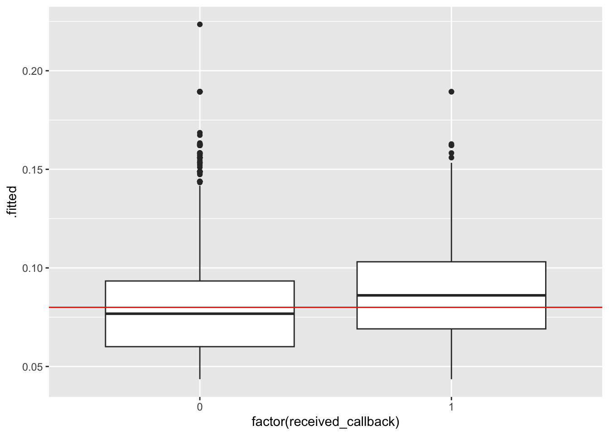

You can download a template file to work with here.
File organization: Save this file in the “Activities” subfolder of your “STAT155” folder.
Learning goals
By the end of this lesson, you should be able to:
Construct multiple logistic regression models in R
Interpret coefficients in multiple logistic regression models
Use multiple logistic regression models to make predictions
Evaluate the quality of logistic regression models by using predicted probability boxplots and by computing and interpreting accuracy, sensitivity, specificity, false positive rate, and false negative rate
Context: In this activity, we’ll look at data from an experiment conducted in 2001-2002 that investigated the influence of race and gender on job applications. The researchers created realistic-looking resumes and then randomly assigned a name to the resume that “would communicate the applicant’s gender and race” (e.g., they they assumed the name Emily would generally be interpreted as a white woman, whereas the name Jamal would generally be interpreted as a black man). They then submitted these resumes to job postings in Boston and Chicago and waited to see if the applicant got a call back from the job posting.
You can find a full description of the variables in this dataset here. Today, we’ll focus on the following variables:
received_callback: indicator that the resume got a call back from the job posting
gender: inferred binary gender associated with the first name on the resume
race: inferred race associated with the first name on the resume
Our research question is: does an applicant’s inferred gender and race have an effect on the chance that they receive a callback after submitting their resume for an open job posting?
You’ll need to run install.packages("broom") in the Console first.
── Column specification ────────────────────────────────────────────────────────
Delimiter: ","
chr (10): job_city, job_industry, job_type, job_ownership, job_req_min_exper...
dbl (20): job_ad_id, job_fed_contractor, job_equal_opp_employer, job_req_any...
ℹ Use `spec()` to retrieve the full column specification for this data.
ℹ Specify the column types or set `show_col_types = FALSE` to quiet this message.
Exercise 1: Graphical and numerical summaries
Our research question involves three categorical variables: received_callback (1 = yes, 0 = no), gender (f = female, m = male), and race (Black, White). Let’s start by creating a mosaic plot to visually compare inferred binary gender and callbacks:
# create mosaic plot of callback vs genderggplot(resume) +geom_mosaic(aes(x =product(gender), fill = received_callback)) +scale_fill_manual("Received Callback? \n(1 = yes, 0 = no)", values =c("lightblue", "steelblue")) +labs(x ="Inferred Binary Gender (f = female, m = male)", y ="Received Callback? (1 = yes, 0 = no)")
In this activity, we’re also interested in looking at the relationship between inferred race and callbacks. One way we can add a third variable to a plot is to use the facet_grid function, particularly when that third variable is categorical. Let’s try that now:
# create mosaic plot of callback vs gender and raceggplot(resume) +geom_mosaic(aes(x =product(gender), fill = received_callback)) +facet_grid(. ~ race) +scale_fill_manual("Received Callback? \n(1 = yes, 0 = no)", values =c("lightblue", "steelblue")) +labs(x ="Inferred Binary Gender (f = female, m = male)", y ="Received Callback? (1 = yes, 0 = no)")
Here’s another way of looking at the relationship between these three variables, switching the placement of gender and race in the mosaic plot:
# create mosaic plot of callback vs gender and raceggplot(resume) +geom_mosaic(aes(x =product(received_callback, race), fill = received_callback)) +facet_grid(. ~ gender) +scale_fill_manual("Received Callback? \n(1 = yes, 0 = no)", values =c("lightblue", "steelblue")) +labs(x ="Inferred Race", y ="Received Callback? (1 = yes, 0 = no)")
When we are comparing three categorical variables, a useful numerical summary is to calculate relative frequencies/proportions of cases falling into each category of the outcome variable, conditional on which categories of the explanatory variables they fall into. Run this code chunk to calculate the conditional proportion of resumes that did nor did not receive a callback, given the inferred gender and race of the applicant:
Write a short description that summarizes the information you gain from these visualizations and numerical summaries. Write this summary using good sentences that tell a story and do not resemble a checklist. Don’t forget to consider the context of the data, and make sure that your summary addresses our research question: does an applicant’s inferred gender or race have an effect on the chance that they receive a callback?
Exercise 2: Logistic regression modeling
Next, we’ll fit a logistic regression model to these data, modeling the log odds of receiving a callback as a function of the applicant’s inferred gender and race:
Fill in the blanks in the code below to fit this logistic regression model.
# fit logistic model and save it as object called "mod1"mod1 <-glm(received_callback ~ gender + race, data = ___, family = ___)
Then, run the code chunk below to get the coefficient estimates and exponentiated estimates, presented in a nicely formatted table:
# print out tidy summary of mod, focusing on estimates & exponentiated estimatestidy(mod1) %>%select(term, estimate) %>%mutate(estimate_exp =exp(estimate))
Write an interpretation of each of the exponentiated coefficients in your logistic regression model.
Exercise 3: Interaction terms
Do you think it would make sense to add an interaction term (between gender and race) to our logistic regression model? Why/why not?
Let’s try adding an interaction between gender and race. Update the code below to fit this new interaction model.
# fit logistic model and save it as object called "mod2"mod2 <-glm(received_callback ~ ___, data = resume, family = ___)
Then, run the code chunk below to get the coefficient estimates and exponentiated estimates for this interaction model, presented in a nicely formatted table:
# print out tidy summary of mod, focusing on estimates & exponentiated estimatestidy(mod2) %>%select(term, estimate) %>%mutate(estimate_exp =exp(estimate))
(CHALLENGE) Write out the logistic regression model formula separately for males and for females. Based on this how would we interpret the exponentiated coefficients in this model?
Exercise 4: Prediction
We can use our models to predict whether or not a resume will receive a call back based on the inferred gender and race of the applicant. Run the code below to use the predict() function to predict the probability of getting a call back for four job applicants: a person inferred to be a black female, a person inferred to be black male, a person inferred to be a white female, and a person inferred to be a white male.
# set up data frame with people we want to predict forpredict_data <-data.frame(gender =c("f", "m", "f", "m"),race =c("black", "black", "white", "white"))print(predict_data)# prediction based on model without interactionmod1 %>%predict(newdata = predict_data, type ="response")# prediction based on model with interactionmod2 %>%predict(newdata = predict_data, type ="response")
Report and compare the predictions we get from predict(). Do they make sense to you based on your understanding of the data? Combine insights from visualizations and modeling to write a few sentences summarizing findings for our research question: does an applicant’s inferred gender and race have an effect on the chance that they receive a callback after submitting their resume for an open job posting?
Exercise 5: Evaluating logistic models with plots
We’ll fit one more model that adds on to the interaction model to also include years of college, years of work experience, and resume quality. The augment() code takes our fitted models and stores the predicted probabilities in a variable called .fitted. Then we use boxplots to show the predicted probabilities of receiving a callback in those who actually did and did not receive a callback.
mod3 <-glm(received_callback ~ gender*race + years_college + years_experience + resume_quality, data = resume, family ="binomial")mod1_output <-augment(mod1, type.predict ="response") # Store predicted probabilities in a variable called .fittedmod2_output <-augment(mod2, type.predict ="response")mod3_output <-augment(mod3, type.predict ="response")ggplot(mod1_output, aes(x =factor(received_callback), y = .fitted)) +geom_boxplot()ggplot(mod2_output, aes(x =factor(received_callback), y = .fitted)) +geom_boxplot()ggplot(mod3_output, aes(x =factor(received_callback), y = .fitted)) +geom_boxplot()
Summarize what you learn about the ability of the 3 models to differentiate those who actually did and did not receive a callback. What model seems best, and why?
If you had to draw a horizontal line across each of the boxplots that vertically separates the left and right boxplots well, where would you place them?
Exercise 6: Evaluating logistic models with evaluation metrics
Sometimes we may need to go beyond the predicted probabilities from our model and try to classify individuals into one of the two binary outcomes (received or did not receive a callback). How high of a predicted probability would we need from our model in order to be convinced that the person actually got a callback? This is the idea behind the horizontal lines that we drew in the previous exercise.
Let’s explore using a probability threshold of 0.08 (8%) to make a binary prediction for each case:
If a model’s predicted probability of getting a callback is greater than or equal to 8.5%, we’ll predict they got a callback.
If the predicted probability is below 8%, we’ll predict they didn’t get a callback.
We can visualize this threshold on our predicted probability boxplots:
ggplot(mod1_output, aes(x =factor(received_callback), y = .fitted)) +geom_boxplot() +geom_hline(yintercept =0.08, color ="red")ggplot(mod2_output, aes(x =factor(received_callback), y = .fitted)) +geom_boxplot() +geom_hline(yintercept =0.08, color ="red")ggplot(mod3_output, aes(x =factor(received_callback), y = .fitted)) +geom_boxplot() +geom_hline(yintercept =0.08, color ="red")
Next, we can use our threshold to classify each person in our dataset based on their predicted probability of getting a callback: we’ll predict that everyone with a predicted probability higher than our threshold got a callback, and otherwise they did not. Then, we’ll compare our model’s prediction to the true outcome (whether or not they actually did get a callback).
# get binary predictions for mod1 and compare to truththreshold <-0.08mod1_output %>%mutate(predictCallback = .fitted >= threshold) %>%## predict callback if probability greater than or equal to thresholdcount(received_callback, predictCallback) ## compare actual and predicted callbacksmod2_output %>%mutate(predictCallback = .fitted >= threshold) %>%count(received_callback, predictCallback)mod3_output %>%mutate(predictCallback = .fitted >= threshold) %>%count(received_callback, predictCallback)
We can use the count() output to fill create contingency tables of the results. (These tables are also called confusion matrices.)
Fill in the confusion matrix for Model 3.
Models 1 and 2: (Both models result in the same confusion matrix.)
Predict callback
Predict no callback
Total
Actually got callback
235
157
392
Actually did not
2200
2278
4478
Total
2435
2435
4870
Model 3:
Predict callback
Predict no callback
Total
Actually got callback
____
____
____
Actually did not
____
____
____
Total
____
____
____
Now compute the following evaluation metrics for the models:
Models 1 and 2:
Accuracy: P(Predict Y Correctly)
Sensitivity: P(Predict Y = 1 | Actual Y = 1)
Specificity: P(Predict Y = 0 | Actual Y = 0)
False negative rate: P(Predict Y = 0 | Actual Y = 1)
False positive rate: P(Predict Y = 1 | Actual Y = 0)
Model 3:
Accuracy: P(Predict Y Correctly)
Sensitivity: P(Predict Y = 1 | Actual Y = 1)
Specificity: P(Predict Y = 0 | Actual Y = 0)
False negative rate: P(Predict Y = 0 | Actual Y = 1)
False positive rate: P(Predict Y = 1 | Actual Y = 0)
Imagine that we are a career center on a college campus and we want to use this model to help students that are looking for jobs. Consider the consequences of incorrectly predicting whether or not an individual will get a callback. What are the consequences of a false negative? What about a false positive? Which one is worse?
Reflection
What are some similarities and differences between how we interpret and evaluate linear and logistic regression models?
Response: Put your response here.
Render your work
Click the “Render” button in the menu bar for this pane (blue arrow pointing right). This will create an HTML file containing all of the directions, code, and responses from this activity. A preview of the HTML will appear in the browser.
Scroll through and inspect the document to check that your work translated to the HTML format correctly.
Close the browser tab.
Go to the “Background Jobs” pane in RStudio and click the Stop button to end the rendering process.
Navigate to your “Activities” subfolder within your “STAT155” folder and locate the HTML file. You can open it again in your browser to double check.
Warning: The `scale_name` argument of `continuous_scale()` is deprecated as of ggplot2
3.5.0.
Warning: The `trans` argument of `continuous_scale()` is deprecated as of ggplot2 3.5.0.
ℹ Please use the `transform` argument instead.
Warning: `unite_()` was deprecated in tidyr 1.2.0.
ℹ Please use `unite()` instead.
ℹ The deprecated feature was likely used in the ggmosaic package.
Please report the issue at <https://github.com/haleyjeppson/ggmosaic>.
# A tibble: 8 × 5
# Groups: race, gender [4]
race gender received_callback n condprop
<chr> <chr> <dbl> <int> <dbl>
1 black f 0 1761 0.934
2 black f 1 125 0.0663
3 black m 0 517 0.942
4 black m 1 32 0.0583
5 white f 0 1676 0.901
6 white f 1 184 0.0989
7 white m 0 524 0.911
8 white m 1 51 0.0887
Overall, a small proportion of applicants received a callback, with those who were inferred to be black males being least likely to get a callback (5.8%) and those inferred to be white females being most likely to get a callback (9.9%). In general, job applicants whose race was inferred to be white were more likely to receive a callback than those whose race was inferred to be black, regardless of their inferred gender. On the other hand, inferred gender does not seem to have as much of an effect on the chance of receiving a callback, with perhaps just a slight advantage for females.
Exercise 2: Logistic regression modeling
mod1 <-glm(received_callback ~ gender + race, data = resume, family ="binomial")tidy(mod1) %>%select(term, estimate) %>%mutate(estimate_exp =exp(estimate))
exp(Intercept): We estimate the odds of getting a callback among those inferred to be black females is only 0.07, meaning that the chance of getting a callback is 0.07 times as large as the chance of not getting a callback (or, inversely, the chance of not getting a callback is 1/0.07 = 14.29) times greater than the chance of getting a callback).
exp(genderm): Comparing applicants of the same inferred race, we estimate that those inferred to be male have an odds of getting a callback that is 0.88 times as high as (or, equivalently, 12% lower than) the odds of getting a callback for those inferred to be female.
exp(racewhite): We estimate that the odds of getting a callback are 1.55 times higher for applicants whose race was inferred to be white as compared to those who were inferred to be black but the same gender.
Exercise 3: Interaction terms
Including an interaction term in our model would allow us to investigate whether the effect of race on getting a callback depends on your gender or, vice versa, if the effect of gender on getting a callback depends on a race. In other words, we could ask questions like: is there more of a discrepancy in callbacks between black and white males than there is among black and white females? Is there more of a discrepancy in callbacks between male and female blacks than there is among male and female whites?
Let’s try adding an interaction between gender and race. Update the code below to fit this new interaction model.
mod2 <-glm(received_callback ~ gender * race, data = resume, family ="binomial")tidy(mod2) %>%select(term, estimate) %>%mutate(estimate_exp =exp(estimate))
\[\log(Odds[ReceivedCallback = 1 \mid gender=f, race]) = \beta_0 + \beta_2 racewhite\] Focusing first on the female model formula, we can see that this is a simple logistic regression model.
exp(beta0): Odds of callback for black females
exp(beta2): This is the odds ratio for race among females. That is, white females have exp(beta2) times the odds of callback than black females.
Then focusing on the male model formula, we can see that this is also a simple logistic regression model.
exp(beta0+beta1): Odds of callback for black males
exp(beta2+beta3): This is the odds ratio for race among males. White males have exp(beta2+beta3) times the odds of callback than black males.
Comparing the male to the female model formula, we have:
exp(beta1): Black males have exp(beta1) times the odds of a callback than black females
exp(beta3): This tells us how many times higher the odds ratio for race is in males as compared to females.
Exercise 4: Prediction
# set up data frame with people we want to predict forpredict_data <-data.frame(gender =c("f", "m", "f", "m"),race =c("black", "black", "white", "white"))print(predict_data)
gender race
1 f black
2 m black
3 f white
4 m white
# prediction based on model without interactionmod1 %>%predict(newdata = predict_data, type ="response")
The predicted probabilities from our logistic regression models show that we estimate those inferred to be black males have the lowest chance of receiving a callback (5.87% based on mod1 and 5.83% based on mod2), followed by black females (6.62% and 6.63%), white males (8.83% and 8.87%), and then white females (9.91% and 9.89%). This matches the trend we observed that those inferred to be white have a greater chance of getting a callback, regardless of gender, and that those who are inferred to be female have a slightly higher chance of getting a callback than those inferred to be male.
Exercise 5: Evaluating logistic models with plots
mod3 <-glm(received_callback ~ gender*race + years_college + years_experience + resume_quality, data = resume, family ="binomial")mod1_output <-augment(mod1, type.predict ="response")mod2_output <-augment(mod2, type.predict ="response")mod3_output <-augment(mod3, type.predict ="response")ggplot(mod1_output, aes(x =factor(received_callback), y = .fitted)) +geom_boxplot()
ggplot(mod2_output, aes(x =factor(received_callback), y = .fitted)) +geom_boxplot()
ggplot(mod3_output, aes(x =factor(received_callback), y = .fitted)) +geom_boxplot()
All 3 models show that those who actually received a callback had higher predicted probabilities of a callback. Models 1 and 2 are very similar–although predicted probabilites of callback are high for those who did actually receive a callback, there is substantial overlap in the boxplots. There is more separation between the boxplots in the third model, perhaps model 3 is best in terms of accuracy.
We would want to place the vertical lines such that as much of the left boxplot was below the line (low predicted probabilities for those with Y = 0) and as much of the right boxplot was above the line (high predicted probabilities for those with Y = 1).
Exercise 6: Evaluating logistic models with evaluation metrics
ggplot(mod1_output, aes(x =factor(received_callback), y = .fitted)) +geom_boxplot() +geom_hline(yintercept =0.08, color ="red")
ggplot(mod2_output, aes(x =factor(received_callback), y = .fitted)) +geom_boxplot() +geom_hline(yintercept =0.08, color ="red")
ggplot(mod3_output, aes(x =factor(received_callback), y = .fitted)) +geom_boxplot() +geom_hline(yintercept =0.08, color ="red")

Next, we can use our threshold to classify each person in our dataset based on their predicted probability of getting a callback: we’ll predict that everyone with a predicted probability higher than our threshold got a callback, and otherwise they did not. Then, we’ll compare our model’s prediction to the true outcome (whether or not they actually did get a callback).
Sensitivity: P(Predict Y = 1 | Actual Y = 1) = TP/(TP + FN) = 233/(233 + 159) = 0.5943878
Specificity: P(Predict Y = 0 | Actual Y = 0) = TN/(TN + FP) = 2465/(2013 + 2465) = 0.550469
False negative rate: P(Predict Y = 0 | Actual Y = 1) = FN/(TP + FN) = 159/(233 + 159) = 0.4056122 (notice that this is equal to 1 - Sensitivity)
False positive rate: P(Predict Y = 1 | Actual Y = 0) = FP/(FP + TN) = 2013/(2013 + 2465) = 0.449531 (notice that this is equal to 1 - Specificity)
Imagine that we are a career center on a college campus and we want to use this model to help students that are looking for jobs. Consider the consequences of incorrectly predicting whether or not an individual will get a callback. What are the consequences of a false negative? What about a false positive? Which one is worse?
False Negatives (predicting no callback, but actually got callback): this would be a lost opportunity if a student decided not to submit their resume, thinking they wouldn’t get a callback, when actually they would have.
False Positives (predicting callback, but actually didn’t get callback): this would be a disappointment for the student, thinking they were going to get a callback but they ended up not getting one.